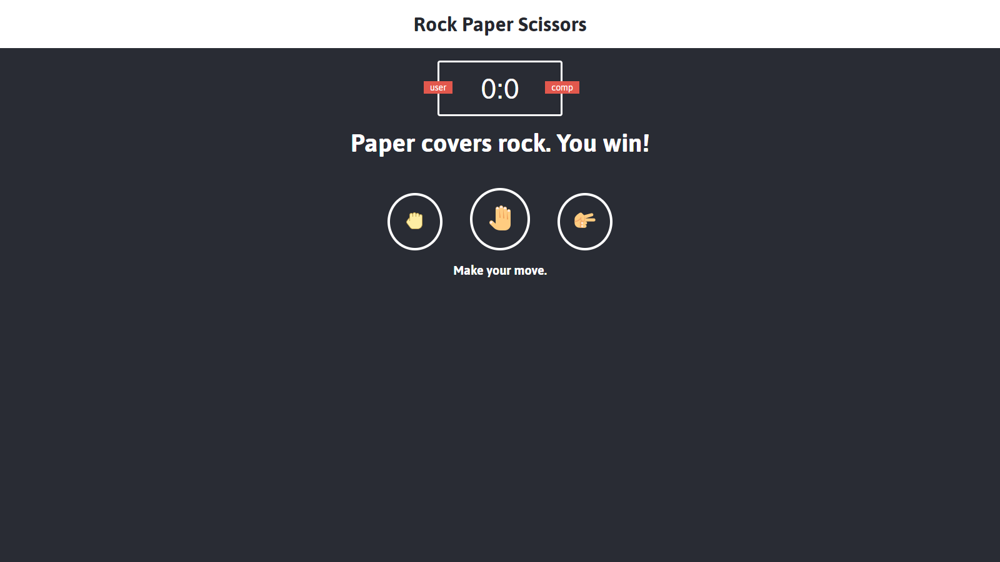

Overview
This project is a simple rock-paper-scissors game. The wins, losses, and draws are made random using Js and the color also correspondes green, red, or gray depending the outcome. This project consists of using Html, CSS, JavaScript
The picture above is from local server. To further check the code in detail feel free to visit my github page. The live site can be found here